Library
Sections such as Personal and Work, folders, links between pages, page history, and a graph of how it all connects.
For Mac · Apple silicon · macOS 14 or later
Leona is a quiet Mac app for working with AI models. Talk to a model running on your own Mac, or one you choose in the cloud. When a conversation is worth keeping, Leona proposes notes for your Library: plain Markdown files in a folder you pick, written only after you approve them.
In private testing: download, then request a free test license.
Ask, draft and think out loud with a model on your Mac (through Ollama), or with Anthropic, OpenAI or OpenRouter using your own key. Attach a PDF or a Word document; dictate if you prefer.
Press Save. Leona proposes new or updated pages for the right section of your Library and shows exactly what would change. Untick a page, edit it, or tell Leona how to revise it: “shorter, dates first”.
Approved pages are written as Markdown files in your folder, with every earlier version kept so you can go back. Later conversations can draw on them and show which pages they used.
Short clips and pictures taken from Leona itself. Everything in them is invented: the bakery, its people and its numbers.
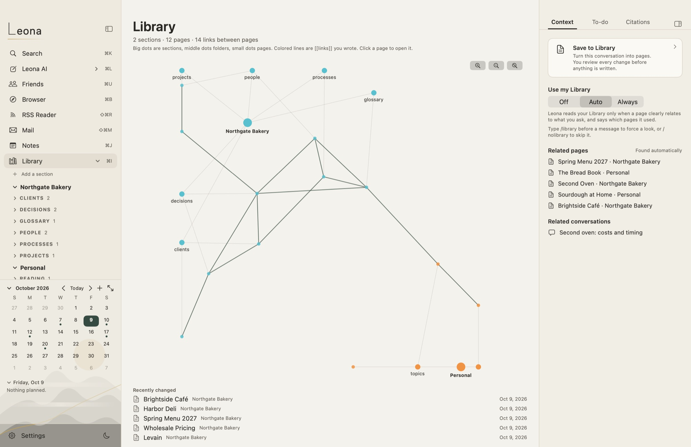
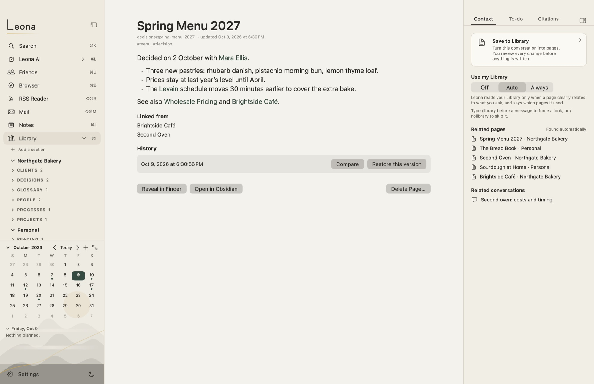
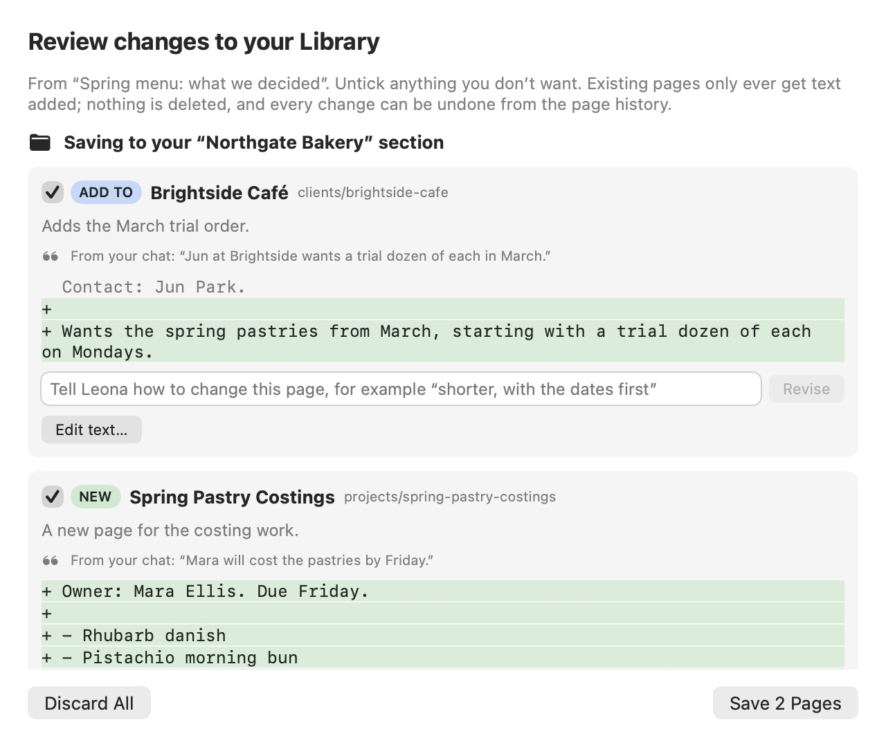
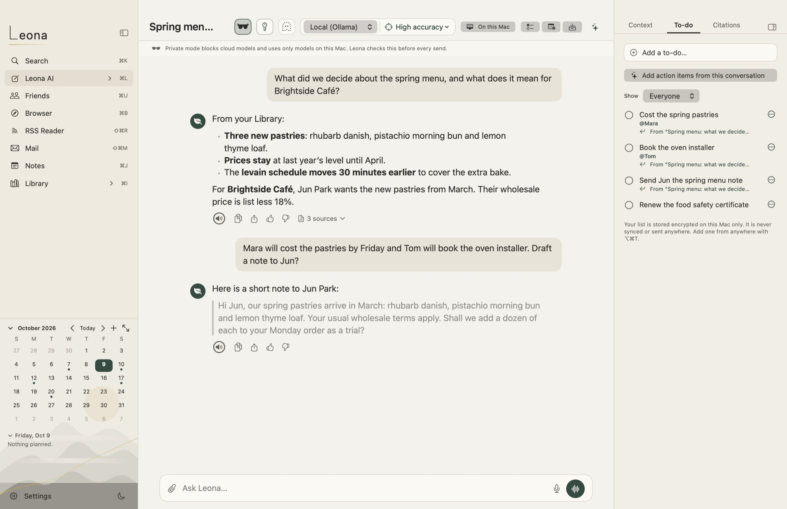
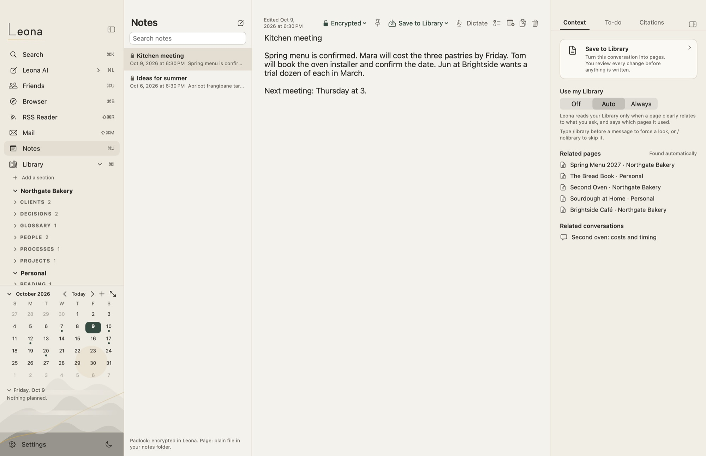
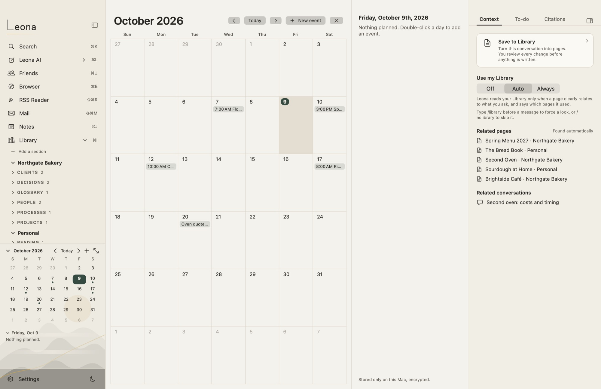
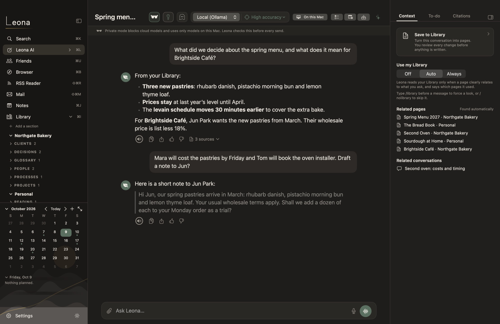
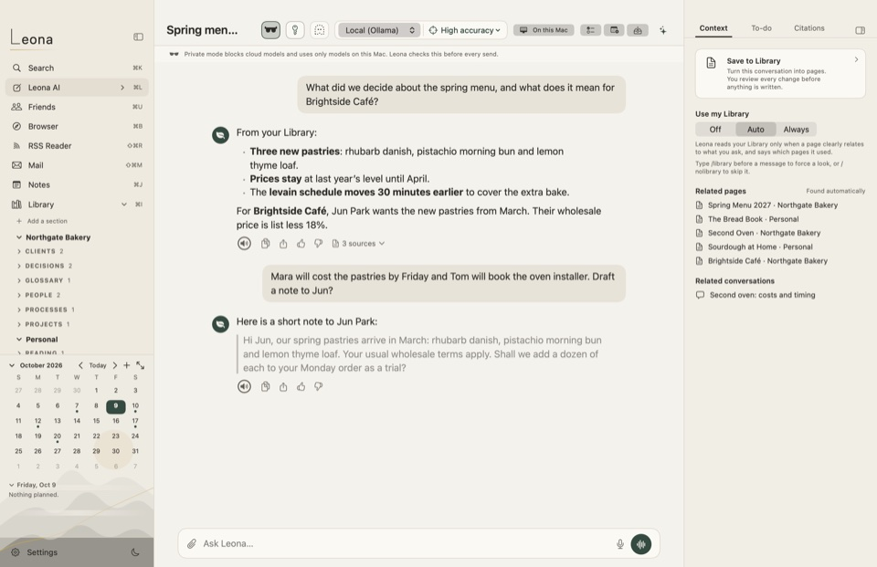
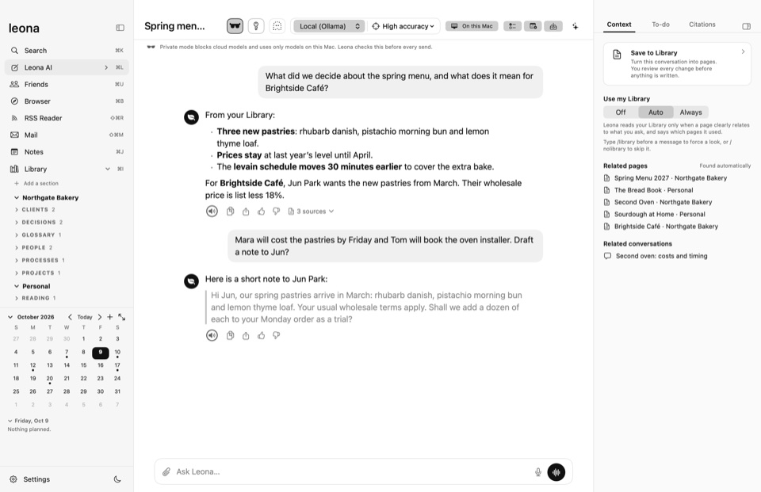
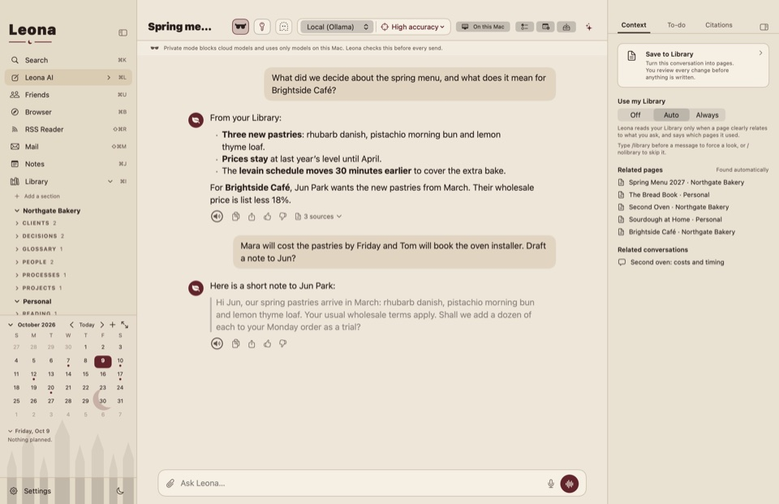
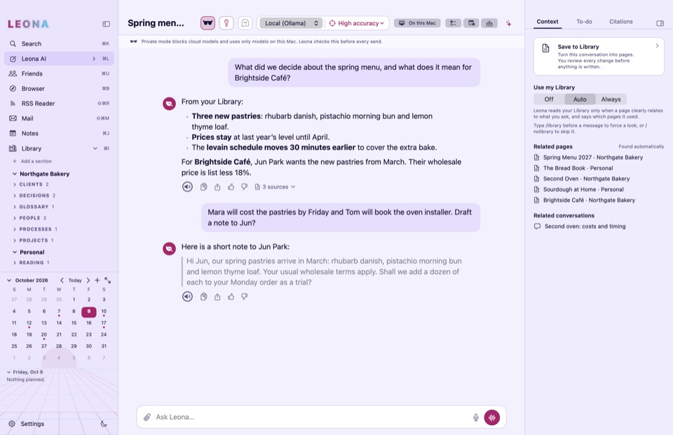
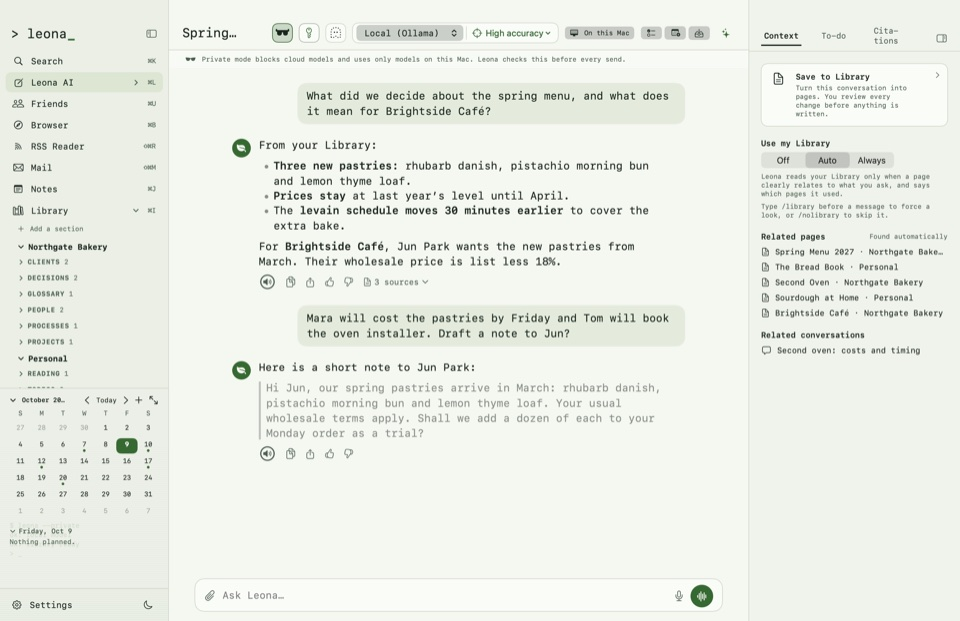
Each line says what Leona does, and where it stops. The full privacy notice covers this website and license requests too.
Sections such as Personal and Work, folders, links between pages, page history, and a graph of how it all connects.
⌘K finds pages, notes, conversations and actions by any word in them, and forgives a capital letter or a stray full stop.
Quick notes, kept encrypted or as plain Markdown files, your choice per note. Dictate into a note, or let it listen to a meeting.
Pull action items out of a conversation or meeting notes, with who each is for. Put dates on a calendar that stays on your Mac.
An RSS reader that shows plain text, and a browser with tracker blocking and nothing remembered after you quit. Save what you read to your Library.
Attach PDFs and Word files, import them into your Library, and turn a conversation into a PDF, Word or Markdown file.
Every place has a shortcut; ⌘K reaches everything else. Arrow keys and Tab move through lists.
Light or dark, and five themes: Default, Minimalist, Gothic, Cyberpunk and Terminal.
An agent that can only use a short list of tools on your Mac, shows its plan, and asks before every change.
Private test
Leona is in private testing. Anyone can download it; it opens with a free test license, which you request below.
Download for Mac (.dmg)Version 0.1.0 (build 8) · October 14, 2026 · 7 MB · SHA-256 3b32c6547dbe50779e451a0b7a72842cddd3d5b6432f0d389f1612d07de04781
Requires macOS 14 or later on a Mac with Apple silicon. 16 GB of memory or more is recommended for local models.
Signed with a Developer ID and notarized by Apple.
Write to us with the email address you want the license for. Each request is read by a person; when it is approved, your license code arrives by email. Paste it into Leona when it asks.
Request a test license by emailOr write to info@scottmcevoy.com.
We use your address only to send your license and news about the test. See the privacy notice.
Not with a local model: conversations, your Library, search, notes, to-dos and the calendar work on your Mac. Cloud models, RSS feeds and the browser need the internet, and only connect when you use them.
Models running on your Mac through Ollama, and cloud models from Anthropic, OpenAI or OpenRouter with your own key. Leona suggests local models that fit your Mac’s memory.
Yes. Library pages are Markdown files in your folder. Open them in any text editor, or in Obsidian.
No analytics. Leona connects only to the AI providers, feeds and websites you choose, and to scottmcevoy.com for the update check you can turn off.
During testing, licenses are free. Request one by email from the Download section; it arrives by email once approved, and works without an internet connection.
Pricing will be announced before release.